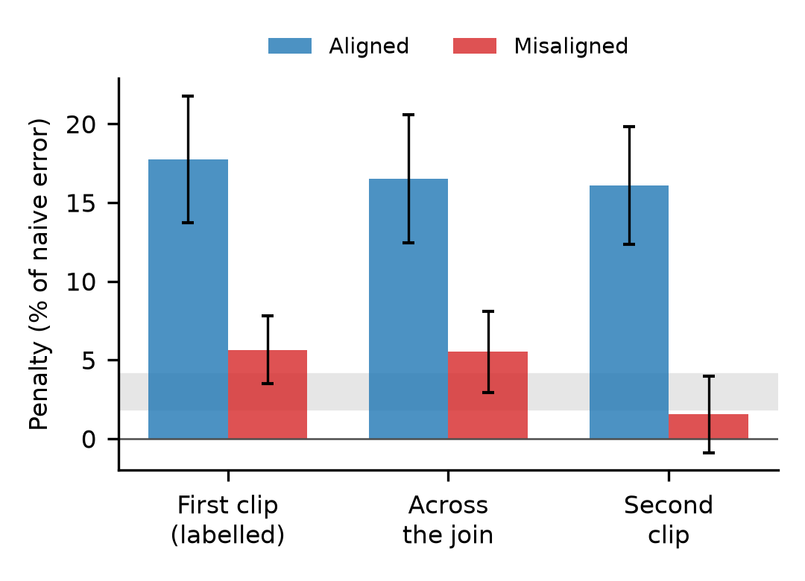
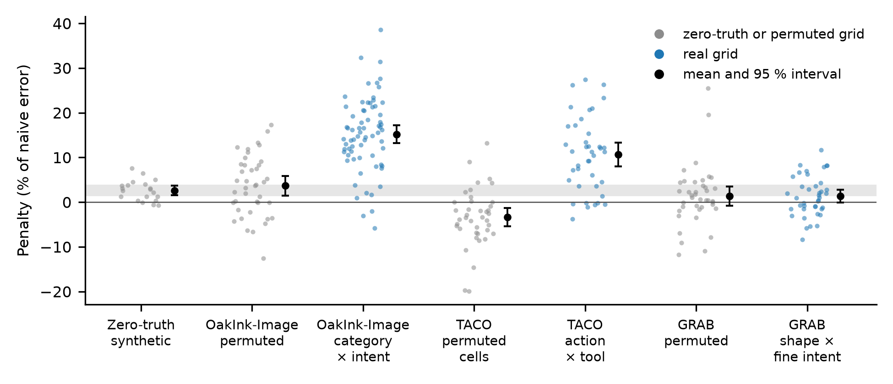

Manuscript prepared for Transactions on Machine Learning Research (not yet submitted) · 2026 · sole author
To test whether a motion model can recombine what it learned, one holds out a combination of labels. On hand-motion data that removes the motion only if each label describes the motion being scored.
Mu-Hua Wang · National Yang Ming Chiao Tung University
Not posted to any preprint server. The hosted PDF is the anonymised build, so it carries no author block.
Schematic. A model is trained without one combination (red) and tested on it. When each label describes its whole recording, the red motion leaves training and the model pays a clear penalty. When a label describes only the first half, red motion stays in training under other labels and the penalty falls to the level of the control. Numbers are from OakInk-Image (40 seeds each) and TACO (40 seeds).
A common test of compositional generalisation holds out a combination of labels — an action with a tool, say — while keeping each label in training, then scores the model on the held-out combination. The split is made on labels. In public hand-motion datasets a label often names one thing about a recording that contains more, so a label can be correct and still describe only part of what is scored.

OakInk-Image clips joined in pairs, with the same number of trajectories, the same 33 object categories and the same training volume in both versions. Blue: the label describes both clips. Red: it describes only the first. Grey band: the zero-truth control.

Each point is one seed. Grey: the zero-truth control and permuted label grids. Blue: real label grids.
Before its data were opened, it was written down that TACO, whose labels each name one tool-use action, would show a penalty above the control. It did: +10.6 % over 40 seeds, and 14.0 points above its own permuted grid. Single seeds ranged from −3.8 % to +27.4 %, so one split is not enough to read the result.
Scope: one prior architecture; the error is reconstruction, not generation; the label condition was changed on one dataset and tested on one other.